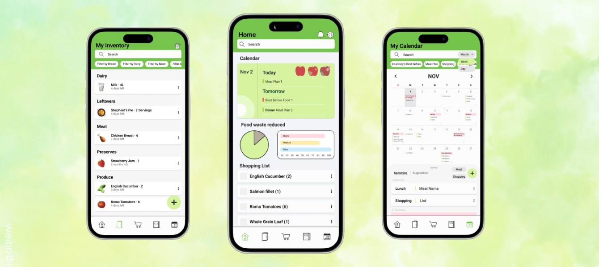
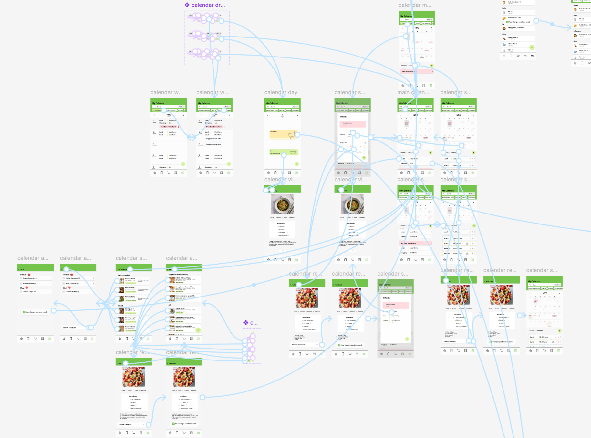
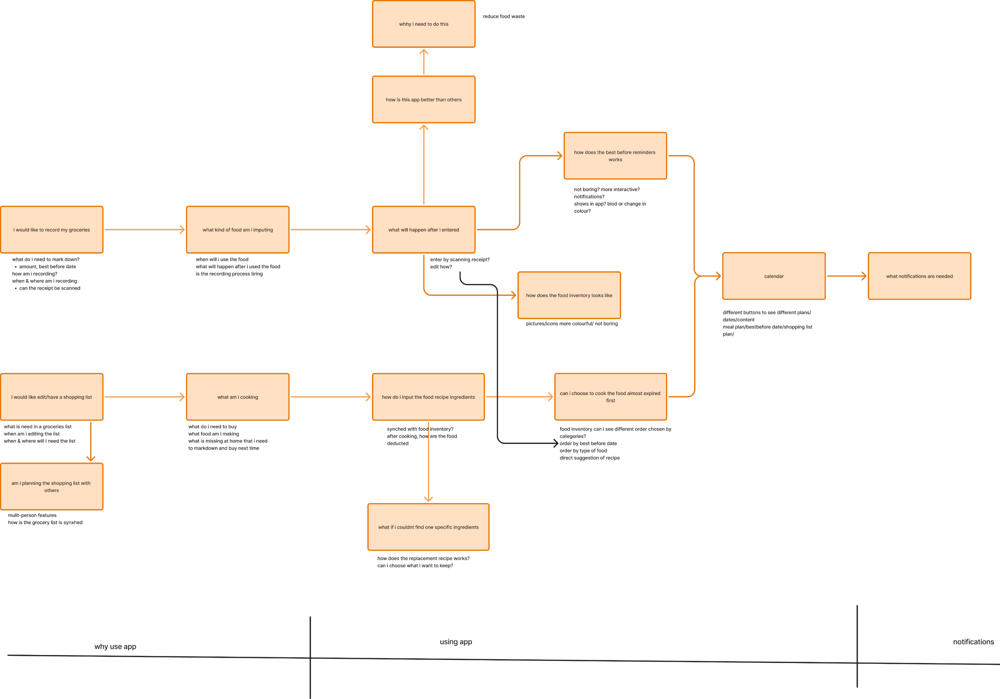
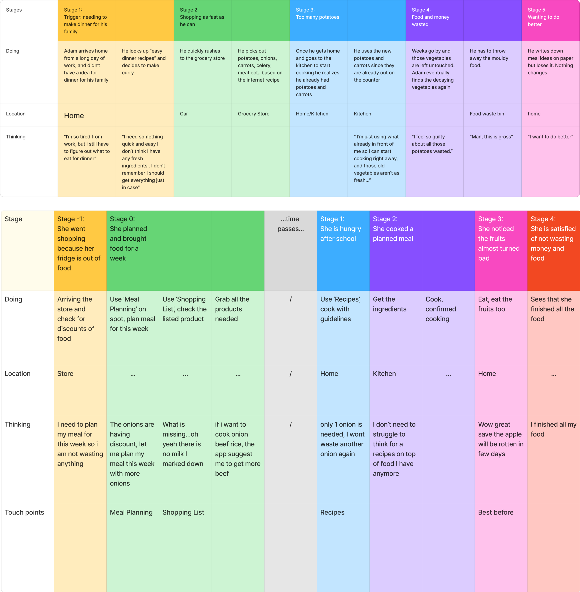
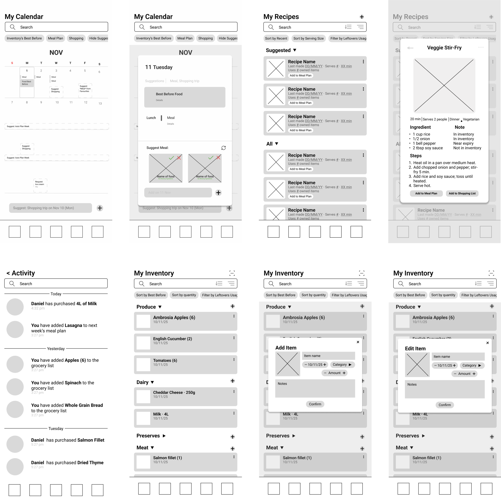

PlateSmart
This project focuses on designing a mobile app that helps users manage food inventory, shopping lists, recipes, and meal planning. The app connects these features together to support daily food decisions and reduce waste.
Problem
Household food waste is often caused by over-buying, poor planning, and lack of food-handling skills. Many people feel guilty when throwing away food, which also creates stress.
The challenge is to design an app that helps users organize their food, plan meals, and reduce waste in a simple and clear way without increasing mental load.

Solution
We designed an app with connected features: Inventory, Shopping List, Recipes, and Calendar. These features work together to help users track food and plan meals based on their data.
The home page includes widgets for quick access to key features like shopping list, calendar, and statistics. The inventory allows users to scan receipts or manually add items, track best-before dates, and manage food easily.

The app also gives smart suggestions, such as recommending recipes based on available ingredients or reminding users when items are close to their best-before dates.
The design focuses on clear navigation, simple layouts, and easy interaction. It supports both individuals and families, including shared shopping lists and synced updates.

Process
We started with UX research to understand why people waste food and how they feel about it. Then we created rough wireframes to explore layout and user flow.
After feedback, we improved the design by simplifying task flows, making navigation clearer, and adjusting layout and spacing. For example, we removed unnecessary steps, improved button hierarchy, and reorganized navigation so users can switch pages more easily.

One challenge was that users took too long to complete basic tasks, so we simplified the flows and made actions more direct. Another issue was unclear navigation in the calendar, which we fixed by improving button placement and visibility.
We continued iterating and refining the UI in Figma, creating a more consistent and cohesive design. The final result is a functional prototype with clear structure, smooth navigation, and useful features.
My Role
- UX Researcher
- UI Designer
Team
- Team project
Timeline
- 7 weeks total
- Research & Ideation
- Wireframing & Testing
- UI Design & Prototype
Tools
- Figma